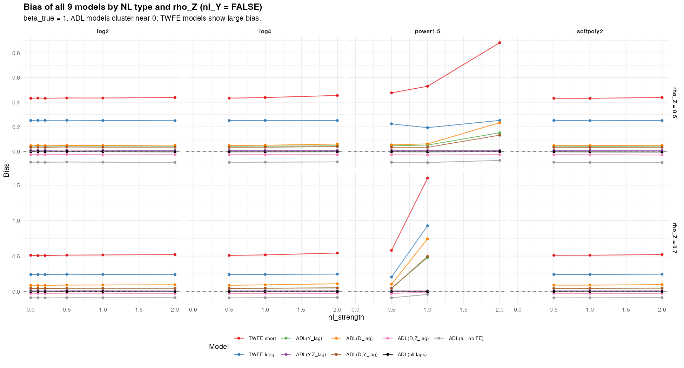
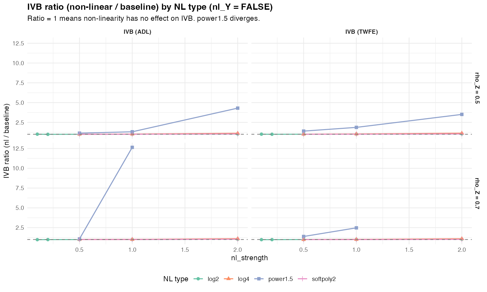
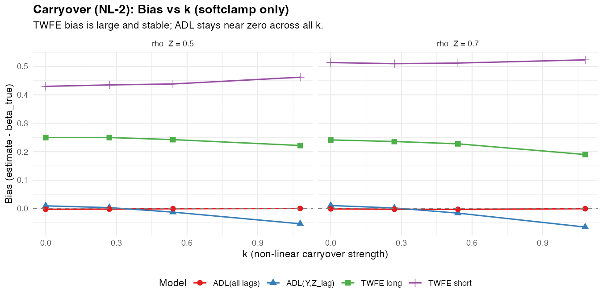
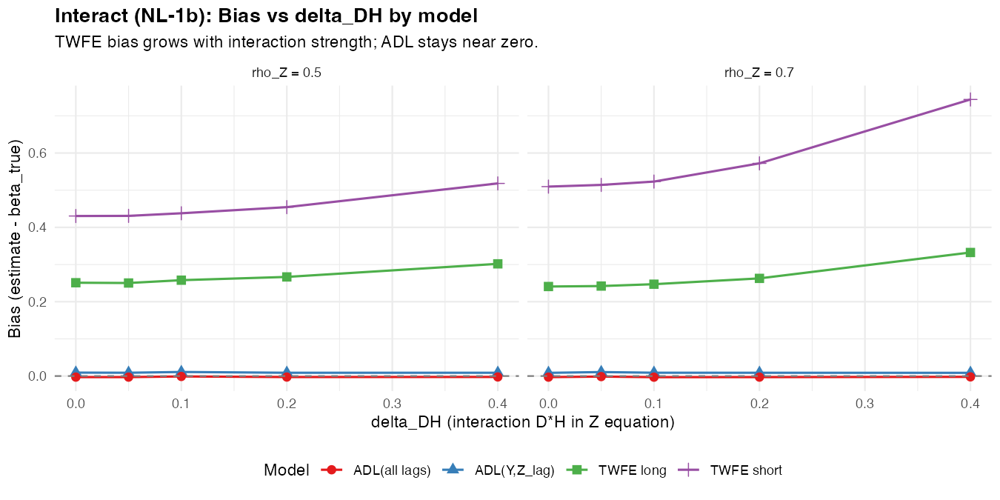
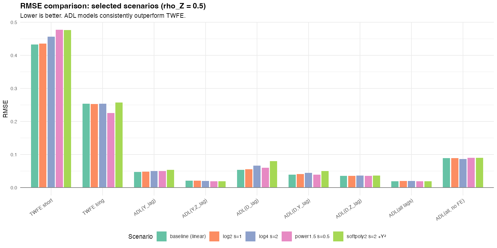
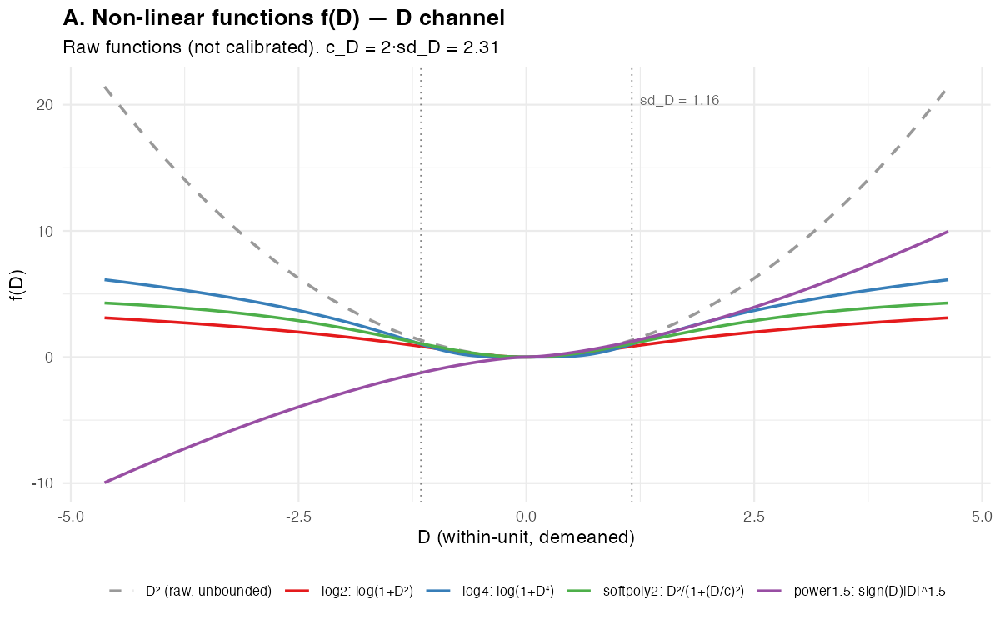
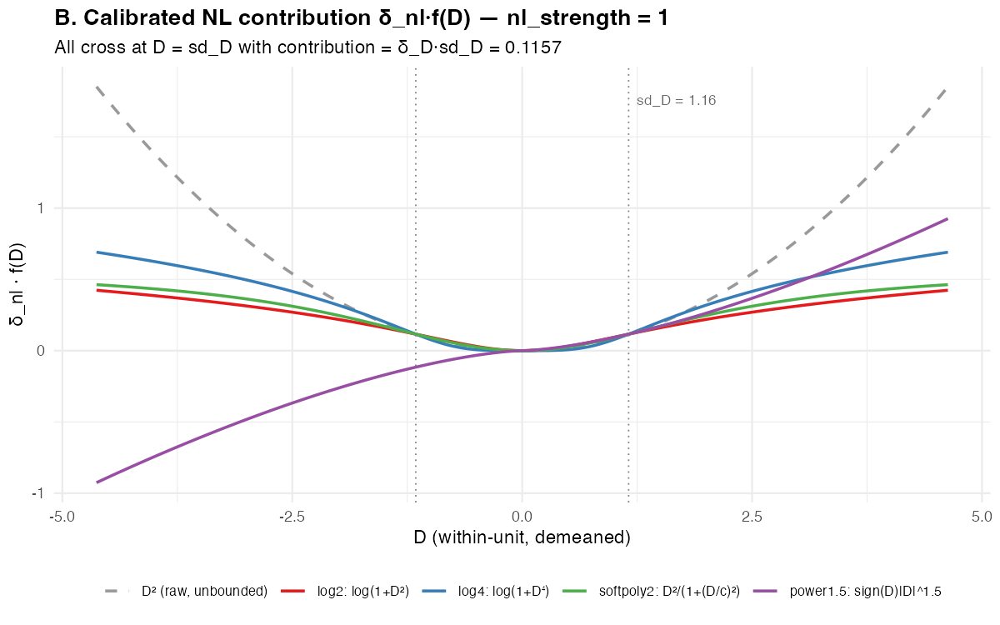
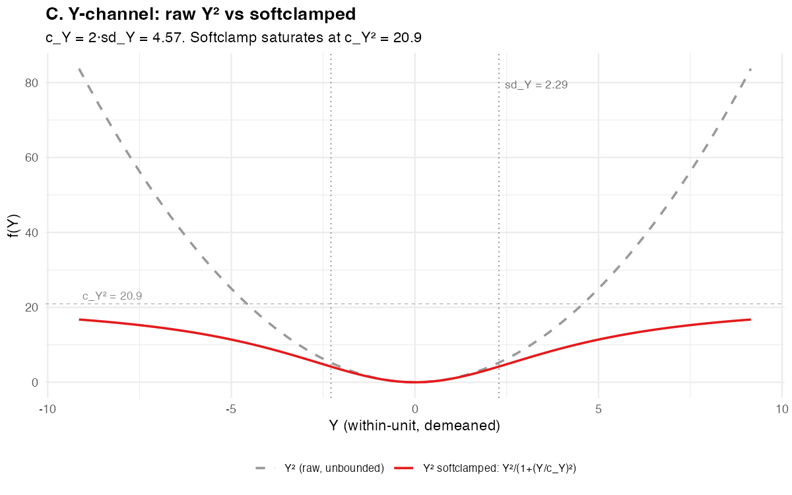

Data: 2026-03-02 Status: Resultados finais — NL (8 tipos + variação T), v4 mecanismos (A/B/C/D), DGP variations
O resultado “IVB é pequeno sob linearidade” sobrevive quando o canal collider D→Z (e/ou Y→Z) contém não-linearidades?
Todas as simulações usam o mesmo DGP base:
D_t = α^D_i + γ_D · Z_{t-1} + ρ_D · D_{t-1} + u_t
Y_t = α^Y_i + β · D_t + γ_Y · Z_{t-1} + ρ_Y · Y_{t-1} + e_t
Z_t = α^Z_i + δ_D · D_t + [f_nl(D_t)] + δ_Y · Y_t + [g_nl(Y_t)] + ρ_Z · Z_{t-1} + ν_tParâmetros fixos: N=100, β=1, ρ_Y=0.5, ρ_D=0.5, γ_D=0.15, γ_Y=0.2, δ_D=0.1, δ_Y=0.1, T_burn=100. Cada cenário × 500 replicações MC.
Cada simulação varia a não-linearidade de forma diferente:
| Simulação | O que varia | Cenários | Tempo |
|---|---|---|---|
Collider (sim_nl_collider.R) |
f_nl(D) e g_nl(Y) no canal D→Z, Y→Z; TT ∈ {10, 30} | 84 | 13.5 min |
Carryover (sim_nl_carryover.R) |
Termo não-linear D²→Y (carryover) | 13 | 7 min |
Interact (sim_nl_interact.R) |
Interação D×H→Z (heterogeneidade) | 10 | 6 min |
O pesquisador estima modelos lineares — nunca vê a não-linearidade no DGP:
| # | Modelo | Especificação | O que controla |
|---|---|---|---|
| 1 | TWFE short | Y ~ D | id + time | Nada (benchmark) |
| 2 | TWFE long | Y ~ D + Z_lag | id + time | Collider Z |
| 3 | ADL(Y_lag) | Y ~ D + Y_lag | id + time | Dinâmica Y |
| 4 | ADL(Y,Z_lag) | Y ~ D + Z_lag + Y_lag | id + time | Collider + dinâmica Y |
| 5 | ADL(D_lag) | Y ~ D + D_lag | id + time | Carryover D |
| 6 | ADL(D,Y_lag) | Y ~ D + D_lag + Y_lag | id + time | Carryover + dinâmica Y |
| 7 | ADL(D,Z_lag) | Y ~ D + D_lag + Z_lag | id + time | Carryover + collider |
| 8 | ADL(all lags) | Y ~ D + D_lag + Y_lag + Z_lag | id + time | Tudo + FE |
| 9 | ADL(all, no FE) | Y ~ D + D_lag + Y_lag + Z_lag | Tudo, sem FE |
IVB = variação no viés de β̂ ao incluir Z_lag no modelo.
IVB ratio = IVB(cenário NL) / IVB(baseline linear). Ratio = 1 significa “não-linearidade não afeta IVB.”
Oito tipos, todos calibrados para contribuição idêntica em D = sd_D_within (≈ 1.16):
Bounded (6):
| Tipo | f(D) | Comportamento | Bounded? |
|---|---|---|---|
| log2 | log(1 + D²) | ~D² na origem, ~2·log|D| longe | Sim (log) |
| log4 | log(1 + D⁴) | Mais agressivo que log2 | Sim (log) |
| softpoly2 | D²/(1+(D/c)²), c=2·sd_D | ~D² na origem, satura em c² | Sim |
| sin | sin(D) | Periódica, não-monótona | Sim ([-1, 1]) |
| invlogit | 1/(1+exp(−D)) − 0.5 | Sigmoide, satura rápido | Sim ((-0.5, 0.5)) |
| tanh | c·tanh(D/c), c=1.5·sd_D | Odd, satura em ±c | Sim ((-c, c)) |
Unbounded (2):
| Tipo | f(D) | Crescimento | Bounded? |
|---|---|---|---|
| power1.5 | sign(D)·|D|^1.5 | Super-linear, sub-quadrático | Não |
| Dlog | D·log(1+|D|) | ~D·logD (mais lento que power1.5) | Não |
Canal Y→Z (quando nl_Y=TRUE): Y²/(1+(Y/c_Y)²) com c_Y = 2·sd_Y_within (softclamped).
TT ∈ {10, 30} na simulação collider. T=10 testado para baseline + log2 + Dlog:
As 3 simulações usam seeds diferentes, gerando baselines ligeiramente distintos. Diferenças estão dentro do MCSE (~0.002):
| Simulação | ρ_Z | TT | TWFE_s | TWFE_l | ADL(Y,Z_lag) | ADL(all) |
|---|---|---|---|---|---|---|
| Collider | 0.5 | 30 | 0.431 | 0.252 | 0.010 | -0.002 |
| Collider | 0.7 | 30 | 0.508 | 0.240 | 0.009 | -0.002 |
| Collider | 0.5 | 10 | 0.198 | 0.108 | 0.010 | -0.022 |
| Collider | 0.7 | 10 | 0.203 | 0.105 | 0.010 | -0.023 |
| Carryover | 0.5 | 30 | 0.430 | 0.250 | 0.010 | -0.003 |
| Carryover | 0.7 | 30 | 0.514 | 0.241 | 0.011 | -0.001 |
| Interact | 0.5 | 30 | 0.431 | 0.251 | 0.009 | -0.003 |
| Interact | 0.7 | 30 | 0.510 | 0.241 | 0.009 | -0.003 |
MCSE típico: TWFE ~0.002, ADL ~0.001. Baselines consistentes.
| Fonte de NL | |IVB_TWFE| | |IVB_ADL| | IVB ratio (TWFE) | ADL_all |bias/β| | Conclusão |
|---|---|---|---|---|---|
| Baseline linear (T=30) | 0.18–0.27 | 0.033–0.037 | 1.00 | < 0.4% | Referência |
| Baseline linear (T=10) | 0.09–0.10 | 0.027–0.029 | — | < 2.3% | Nickell amplificado |
| Bounded D→Z (log2, softpoly2, log4) | 0.18–0.30 | 0.033–0.041 | 1.00–1.13 | < 0.5% | IVB pequeno sobrevive |
| Bounded D→Z (sin) | 0.18–0.27 | 0.033–0.038 | 0.98–1.01 | < 0.3% | IVB inalterado |
| Bounded D→Z (invlogit) | 0.20–0.34 | 0.035–0.040 | 1.07–1.40 | < 0.4% | Aumento moderado |
| Bounded D→Z (tanh) | 0.19–0.33 | 0.034–0.039 | 1.03–1.37 | < 0.5% | Aumento moderado |
| Bounded D→Z + Y→Z (nl_Y=TRUE) | 0.18–0.27 | 0.033–0.046 | 1.00–1.25 | < 0.5% | IVB pequeno sobrevive |
| Unbounded D→Z (Dlog) | 0.21–0.90+ | 0.035–0.064 | 1.16–3.51 | < 0.4% | IVB NÃO é pequeno |
| Unbounded D→Z (power1.5) | 0.25–0.38+ | 0.038–0.47 | 1.38–3.61 | < 0.3% (instável) | IVB NÃO é pequeno |
| Carryover D→Y (softclamp) | 0.18–0.33 | 0.029–0.034 | 1.00–1.33 | < 0.3% | IVB pequeno sobrevive |
| Interação D×H→Z (δ_DH ≤ 0.20) | 0.18–0.31 | 0.033–0.056 | 1.00–1.15 | < 0.3% | IVB pequeno sobrevive |
| Interação D×H→Z (δ_DH = 0.40) | 0.22–0.41 | 0.072–0.109 | 1.20–1.53 | < 0.3% | IVB cresce, mas ADL_all robusto |
| D binário (v4 mec. C, TWFE only) | 0.16–0.53 | — | — | — | ⚠️ **IVB 16–53% β, |
| Feedback direto (φ ≤ 0.10) | — | — | — | < 0.8% | ADL_all robusto |
| Carryover direto (β₂ ≤ 0.50) | — | — | — | < 0.3% | ADL_all robusto |
Todos os 9 modelos, facetados por nl_type e ρ_Z. TWFE tem bias grande e estável (~0.43–0.52); ADL_all fica colado em zero.

Leitura: ADL models (linha preta = ADL_all) ficam perto de zero independentemente do tipo e força da não-linearidade. TWFE (vermelho/azul) tem bias grande e cresce com power1.5 e Dlog.
IVB ratio = IVB(NL) / IVB(baseline). Para bounded (log2, log4, softpoly2, sin, invlogit, tanh), o ratio fica perto de 1.0 mesmo em nl_strength=2.0. power1.5 e Dlog divergem.

Ranges cobrem ρ_Z ∈ {0.5, 0.7}:
| Tipo | nl_Y | nl_str=0.2 | nl_str=0.5 | nl_str=1.0 | nl_str=2.0 |
|---|---|---|---|---|---|
| baseline | — | 1.00 | 1.00 | 1.00 | 1.00 |
| log2 | FALSE | 1.00 | 1.00–1.01 | 1.01–1.02 | 1.05–1.06 |
| log2 | TRUE | — | 1.01–1.02 | 1.02–1.07 | 1.00–1.22 |
| softpoly2 | FALSE | — | 1.01 | 1.01 | 1.03–1.05 |
| softpoly2 | TRUE | — | 1.01–1.03 | 1.00–1.07 | 0.93–1.22 |
| log4 | FALSE | — | 1.00–1.01 | 1.03–1.04 | 1.12–1.13 |
| sin | FALSE | — | 1.00 | 1.00 | 0.98–1.01 |
| invlogit | FALSE | — | 1.07–1.10 | 1.15–1.19 | 1.28–1.40 |
| tanh | FALSE | 1.03 | 1.07–1.10 | 1.13–1.18 | 1.24–1.37 |
| Dlog | FALSE | 1.16 | 1.45 | 1.98–3.35 | 3.51 (instável rho=0.7) |
| power1.5 | FALSE | — | 1.38–1.40 | 1.87–3.22 | 3.61+ (instável) |
| Tipo | nl_Y | nl_str=0.2 | nl_str=0.5 | nl_str=1.0 | nl_str=2.0 |
|---|---|---|---|---|---|
| baseline | — | 1.00 | 1.00 | 1.00 | 1.00 |
| log2 | FALSE | 1.00 | 0.99–1.00 | 1.00–1.01 | 1.04 |
| log2 | TRUE | — | 1.00–1.03 | 1.07–1.10 | 1.23–1.25 |
| softpoly2 | FALSE | — | 1.01 | 1.00 | 1.05 |
| softpoly2 | TRUE | — | 1.03 | 1.08–1.09 | 1.23–1.25 |
| log4 | FALSE | — | 1.00 | 1.03–1.04 | 1.11–1.12 |
| sin | FALSE | — | 1.00 | 1.00–1.01 | 1.02 |
| invlogit | FALSE | — | 1.02–1.04 | 1.03–1.07 | 1.07–1.15 |
| tanh | FALSE | 1.00–1.01 | 1.01–1.03 | 1.02–1.07 | 1.06–1.14 |
| Dlog | FALSE | 1.03–1.05 | 1.11–1.17 | 1.36–1.74 | 1.96 (instável rho=0.7) |
| power1.5 | FALSE | — | 1.10–1.13 | 1.31–11.04 | 3.03+ (instável) |
TWFE é estável e enviesado; ADL(all lags) fica colado em zero:

TWFE bias cresce com δ_DH; ADL_all permanece ~0:

| Cenário | TWFE_s | TWFE_l | ADL(Y_lag) | ADL(Y,Z) | ADL(D_lag) | ADL(D,Y) | ADL(D,Z) | ADL(all) | ADL(noFE) |
|---|---|---|---|---|---|---|---|---|---|
| baseline | 0.431 | 0.252 | 0.043 | 0.010 | 0.047 | 0.034 | -0.026 | -0.002 | -0.086 |
| log2 s=1 | 0.434 | 0.253 | 0.044 | 0.010 | 0.049 | 0.035 | -0.025 | -0.002 | -0.087 |
| log2 s=2 +Y² | 0.477 | 0.256 | 0.050 | 0.009 | 0.075 | 0.047 | -0.027 | -0.002 | -0.086 |
| log4 s=2 | 0.456 | 0.254 | 0.047 | 0.010 | 0.061 | 0.040 | -0.026 | -0.002 | -0.086 |
| softpoly2 s=2 +Y² | 0.477 | 0.258 | 0.051 | 0.009 | 0.075 | 0.047 | -0.028 | -0.003 | -0.087 |
| sin s=2 | 0.434 | 0.253 | 0.044 | 0.010 | 0.049 | 0.036 | -0.026 | -0.002 | -0.086 |
| invlogit s=2 | 0.478 | 0.226 | 0.048 | 0.010 | 0.054 | 0.035 | -0.026 | -0.002 | -0.087 |
| tanh s=2 | 0.475 | 0.228 | 0.048 | 0.010 | 0.055 | 0.036 | -0.026 | -0.001 | -0.087 |
| Dlog s=1 | 0.542 | 0.186 | 0.053 | 0.008 | 0.063 | 0.034 | -0.029 | -0.003 | -0.087 |
| Dlog s=2 | 0.742 | 0.112 | 0.071 | 0.005 | 0.106 | 0.041 | -0.031 | -0.003 | -0.080 |
| power1.5 s=0.5 | 0.474 | 0.226 | 0.046 | 0.009 | 0.052 | 0.033 | -0.027 | -0.003 | -0.089 |
| Cenário | TWFE_s | TWFE_l | ADL(Y_lag) | ADL(Y,Z) | ADL(D_lag) | ADL(D,Y) | ADL(D,Z) | ADL(all) | ADL(noFE) |
|---|---|---|---|---|---|---|---|---|---|
| baseline | 0.508 | 0.240 | 0.046 | 0.009 | 0.088 | 0.044 | -0.025 | -0.002 | -0.089 |
| log2 s=1 | 0.511 | 0.239 | 0.046 | 0.009 | 0.089 | 0.044 | -0.027 | -0.002 | -0.088 |
| log2 s=2 +Y² | 0.523 | 0.256 | 0.054 | 0.009 | 0.104 | 0.055 | -0.027 | -0.003 | -0.086 |
| log4 s=2 | 0.544 | 0.245 | 0.050 | 0.009 | 0.107 | 0.050 | -0.027 | -0.004 | -0.085 |
| softpoly2 s=2 +Y² | 0.512 | 0.263 | 0.054 | 0.009 | 0.100 | 0.055 | -0.027 | -0.003 | -0.087 |
| sin s=2 | 0.508 | 0.245 | 0.047 | 0.009 | 0.090 | 0.045 | -0.026 | -0.003 | -0.089 |
| invlogit s=2 | 0.557 | 0.215 | 0.047 | 0.008 | 0.099 | 0.043 | -0.028 | -0.004 | -0.090 |
| tanh s=2 | 0.549 | 0.217 | 0.046 | 0.007 | 0.096 | 0.042 | -0.029 | -0.005 | -0.091 |
| Dlog s=1 | 1.052 | 0.154 | 0.070 | 0.006 | 0.290 | 0.068 | -0.025 | -0.004 | -0.091 |
| power1.5 s=0.5 | 0.582 | 0.207 | 0.050 | 0.010 | 0.106 | 0.045 | -0.026 | -0.002 | -0.088 |
Leitura: ADL(all lags) tem |bias| < 0.005 em todos os cenários estáveis, incluindo os 4 novos tipos NL. O segundo melhor é ADL(Y,Z_lag) com |bias| ~0.01. TWFE_s chega a 1.05 com Dlog/rho=0.7.
| Cenário | TWFE_s | TWFE_l | ADL(Y_lag) | ADL(Y,Z) | ADL(D_lag) | ADL(D,Y) | ADL(D,Z) | ADL(all) | ADL(noFE) |
|---|---|---|---|---|---|---|---|---|---|
| baseline | 0.433 | 0.254 | 0.047 | 0.021 | 0.054 | 0.039 | 0.035 | 0.019 | 0.089 |
| log2 s=1 | 0.435 | 0.254 | 0.047 | 0.021 | 0.055 | 0.040 | 0.034 | 0.019 | 0.089 |
| log2 s=2 +Y² | 0.479 | 0.258 | 0.053 | 0.019 | 0.080 | 0.051 | 0.035 | 0.018 | 0.089 |
| log4 s=2 | 0.458 | 0.256 | 0.050 | 0.020 | 0.066 | 0.044 | 0.035 | 0.019 | 0.088 |
| softpoly2 s=2 +Y² | 0.479 | 0.260 | 0.054 | 0.019 | 0.080 | 0.050 | 0.036 | 0.019 | 0.090 |
| sin s=2 | 0.435 | 0.255 | 0.047 | 0.020 | 0.055 | 0.040 | 0.035 | 0.018 | 0.088 |
| invlogit s=2 | 0.480 | 0.228 | 0.051 | 0.020 | 0.060 | 0.040 | 0.035 | 0.019 | 0.089 |
| tanh s=2 | 0.476 | 0.229 | 0.051 | 0.021 | 0.060 | 0.041 | 0.035 | 0.020 | 0.090 |
| Dlog s=1 | 0.543 | 0.188 | 0.056 | 0.020 | 0.068 | 0.040 | 0.038 | 0.020 | 0.090 |
| power1.5 s=0.5 | 0.475 | 0.227 | 0.049 | 0.019 | 0.058 | 0.039 | 0.036 | 0.019 | 0.092 |

ADL(all lags) tem o menor RMSE em todos os cenários estáveis (0.018–0.020). Não é apenas o menos enviesado — é também o mais preciso.
ADL(all lags) com FE vs sem FE. O custo de não ter FE é ~0.085 de bias — 40x maior que o bias do ADL(all) com FE:
| Cenário | ADL(all) bias | ADL(noFE) bias | Nickell cost |
|---|---|---|---|
| baseline | -0.002 | -0.086 | 0.084 |
| log2 s=1 | -0.002 | -0.087 | 0.085 |
| log2 s=2 | -0.001 | -0.085 | 0.084 |
| log4 s=2 | -0.002 | -0.086 | 0.084 |
| softpoly2 s=2 | -0.002 | -0.085 | 0.083 |
| sin s=2 | -0.002 | -0.086 | 0.084 |
| invlogit s=2 | -0.002 | -0.087 | 0.085 |
| tanh s=2 | -0.001 | -0.087 | 0.086 |
| Dlog s=1 | -0.003 | -0.087 | 0.084 |
O Nickell cost é estável (~0.084) e não muda com a não-linearidade. Reforça: FE é essencial.
| ρ_Z | TT | TWFE_s | ADL_all bias | ADL(noFE) bias | Nickell cost |
|---|---|---|---|---|---|
| 0.5 | 10 | 0.198 | -0.022 | -0.091 | 0.069 |
| 0.5 | 30 | 0.431 | -0.002 | -0.086 | 0.084 |
| 0.7 | 10 | 0.203 | -0.023 | -0.092 | 0.069 |
| 0.7 | 30 | 0.508 | -0.002 | -0.089 | 0.087 |
ADL_all bias ~10x maior com T=10 (0.022 vs 0.002): o Nickell bias do estimador within com LDV é substantivamente maior com painel curto.
| Tipo | nl_str | ρ_Z | TT=10 ADL_all | TT=30 ADL_all | Ratio TT=10/TT=30 |
|---|---|---|---|---|---|
| log2 | 0.5 | 0.5 | -0.018 | -0.001 | 18x |
| log2 | 1.0 | 0.5 | -0.021 | -0.002 | 11x |
| log2 | 2.0 | 0.5 | -0.019 | -0.001 | 19x |
| Dlog | 0.5 | 0.5 | -0.019 | -0.002 | 10x |
| Dlog | 1.0 | 0.5 | -0.018 | -0.003 | 6x |
| Dlog | 2.0 | 0.5 | -0.020 | -0.003 | 7x |
| log2 | 0.5 | 0.7 | -0.020 | -0.003 | 7x |
| log2 | 2.0 | 0.7 | -0.021 | -0.002 | 11x |
| Dlog | 0.5 | 0.7 | -0.021 | -0.002 | 11x |
| Dlog | 1.0 | 0.7 | -0.019 | -0.004 | 5x |
O resultado mais importante das novas simulações: a fronteira entre “IVB pequeno” e “IVB grande” é exatamente bounded vs. unbounded, e não depende da velocidade de crescimento.
| Tipo | Bounded? | Crescimento | IVB ratio (TWFE) | IVB ratio (ADL) |
|---|---|---|---|---|
| sin | Sim | Periódico | 1.00 | 1.00 |
| log2 | Sim | ~logD | 1.01–1.06 | 1.00–1.04 |
| softpoly2 | Sim | Satura | 1.01–1.05 | 1.00–1.05 |
| log4 | Sim | ~logD | 1.01–1.13 | 1.00–1.12 |
| invlogit | Sim | Satura | 1.07–1.40 | 1.02–1.15 |
| tanh | Sim | Satura | 1.03–1.37 | 1.00–1.14 |
| Dlog | Não | D·logD | 1.16–3.51 | 1.05–1.96 |
| power1.5 | Não | D^1.5 | 1.38–3.61 | 1.10–3.03+ |
Observação crucial: Dlog cresce mais devagar que power1.5 (D·logD vs D^1.5), mas produz IVB ratios comparáveis. Mesmo o mínimo de unboundedness é suficiente para amplificar o IVB substancialmente.
Dentro das bounded, há dois subgrupos:
Grupo 1 — Ratio ≈ 1.0 (sem efeito): - sin (não-monótona): ratio 0.98–1.01. Oscilações se cancelam na projeção linear. - log2 (log-bounded): ratio 1.00–1.06. Crescimento logarítmico comprime os extremos. - softpoly2 (satura suave): ratio 1.01–1.05. Saturação limita a contribuição.
Grupo 2 — Ratio até ~1.4 (aumento moderado): - invlogit (sigmoide): ratio 1.07–1.40. Saturação rápida cria assimetria. - tanh (odd, satura): ratio 1.03–1.37. Similar ao invlogit mas odd. - log4 (log agressivo): ratio 1.01–1.13. Intermediário.
A diferença está na velocidade de saturação: invlogit e tanh saturam mais rápido, criando assimetria entre D pequeno (contribuição ~ linear) e D grande (contribuição ~ constante).
As duas únicas não-linearidades que fazem o IVB crescer substancialmente. Ambas são unbounded.
power1.5: derivada cresce como √|D|. Valores extremos de D produzem contribuições cada vez maiores para Z. No feedback loop Z→D→Z, isso amplifica. Cenários com nl_str≥1.0/ρ_Z=0.7 são instáveis (85–100% descartados).
Dlog: derivada cresce como log|D| + 1. Mais lento que power1.5, mas ainda unbounded. Cenários com nl_str=2.0/ρ_Z=0.7 são instáveis (100% descartados). Cenários estáveis mostram IVB ratio até 3.51 (TWFE).
Por que unbounded importa: em D = 3·sd_D (cauda da distribuição), power1.5 contribui 3^1.5 = 5.2x mais que o linear; Dlog contribui 3·log(4) = 4.2x mais. Esses pontos extremos dominam a projeção linear, inflando π e portanto o IVB.
IVB_ADL chega a 10.9% de β (vs 3.7% baseline). Porém, ADL_all |bias| permanece < 0.3% porque o IVB e outros viéses se cancelam parcialmente. Isso é uma fragilidade: o ADL_all é “bom” por cancelamento, não por eliminação de viés.
| Cenários | Estáveis | Instáveis (>10% disc.) |
|---|---|---|
| Collider bounded (log2, log4, softpoly2) T=30 | 24/24 | 0 |
| Collider sin, invlogit, tanh T=30 | 14/14 | 0 |
| Collider Dlog T=30 | 7/8 | 1/8 (nl_str=2.0/ρ_Z=0.7: 100%) |
| Collider power1.5 T=30 | 3/6 | 3/6 (nl_str≥1.0/ρ_Z=0.7 e nl_str=2.0/ρ_Z=0.5) |
| Collider T=10 (baseline + log2) | 10/10 | 0 |
| Collider T=10 (Dlog) | 5/6 | 1/6 (nl_str=2.0/ρ_Z=0.7: 100%) |
| Carryover softclamp | 6/6 | 0 |
| Carryover raw | 4/7 | 3/7 (k≥0.25) |
| Interact | 10/10 | 0 |
As simulações v4 (sim_ivb_twfe_v4.R) investigam 4
mecanismos estruturais que explicam por que o IVB é
empiricamente pequeno. N=200, T=30, β=1, 500 reps por cenário. Todos os
modelos são TWFE (short = sem Z, long = com Z) — não incluem
ADL.
| Mecanismo | Cenários | % com | IVB | < 1 SE |
|---|---|---|---|---|
| A: D→Z btw vs wth | 108 | 33.3% | 13.8% | 48.7% |
| B: Y→Z btw vs wth | 72 | 33.3% | 12.5% | 44.2% |
| C: D binário | 16 | 0% | 32.2% | 53.1% |
| D: Erro de medida em Z | 16 | 0% | 19.2% | 53.0% |
Resultado-chave: Mecanismo C (tratamento binário) tem 0% dos cenários com IVB < 1 SE. O IVB é sistematicamente grande com tratamento binário.
Pergunta: O FE absorve a variação between de D→Z, reduzindo π e portanto o IVB?
DGP: Z = α^Z_i + γ_D_btw·D̄_i + γ_D_wth·(D − D̄_i) + γ_Y·Y + ρ_Z·Z_lag + ν
Grid: γ_D_btw ∈ {0, 0.3, 0.6}, γ_D_wth ∈ {0, 0.3, 0.6}, γ_Y ∈ {0, 0.3, 0.6}, R²_within ∈ {0.1, 0.5, 0.9}. Total: 108 cenários.
| γ_Y | γ_D_btw | γ_D_wth | IVB/β | ||
|---|---|---|---|---|---|
| 0 | 0 | 0 | 0.0% | 0.01 | 95.8% |
| 0.3 | 0 | 0 | 8.3% | 4.6 | 0.0% |
| 0.3 | 0.6 | 0 | 8.3% | 6.0 | 0.0% |
| 0.3 | 0 | 0.3 | 8.3% | 2.1 | 44.6% |
| 0.3 | 0 | 0.6 | 24.9% | 13.4 | 0.0% |
| 0.6 | 0 | 0 | 26.4% | 15.5 | 0.0% |
| 0.6 | 0 | 0.6 | 48.7% | 35.8 | 0.0% |
Confirmação: γ_D_btw não afeta o IVB — é absorvido pelo FE. O IVB depende apenas de γ_D_wth (variação within de D→Z) e γ_Y (canal Y→Z). Quando ambos são zero, IVB ≈ 0.
Pergunta: Analogamente, o FE absorve γ_Y_btw?
DGP: Z = … + γ_Y_btw·Ȳ_i + γ_Y_wth·(Y − Ȳ_i) + …
Grid: γ_D ∈ {0.3, 0.6}, γ_Y_btw ∈ {0, 0.2, 0.5}, γ_Y_wth ∈ {0, 0.2, 0.5}, R²_within ∈ {0.1, 0.5, 0.9}. Total: 72 cenários.
| γ_D | γ_Y_btw | γ_Y_wth | IVB/β | |
|---|---|---|---|---|
| 0.3 | 0 | 0 | 0.3% | 0.07 |
| 0.3 | 0 | 0.2 | 9.6% | 5.0 |
| 0.3 | 0.5 | 0 | 0.3% | 0.17 |
| 0.3 | 0 | 0.5 | 32.1% | 21.4 |
| 0.6 | 0 | 0.5 | 32.1% | 21.3 |
Confirmação: γ_Y_btw não afeta θ* — absorvido pelo FE. O IVB depende de γ_Y_wth. Implicação: em painéis com variação de Y→Z predominantemente between (ex: GDP per capita influencia Z mas via nível médio do país), o IVB é pequeno.
Pergunta: O IVB permanece pequeno quando D é binário (0/1)?
DGP: D_it ∈ {0, 1}, escalonado (staggered). prob_switch controla a fração de unidades que mudam de 0→1. Uma vez tratado, permanece tratado.
Grid: prob_switch ∈ {0.1, 0.3, 0.5, 0.7}, γ_D ∈ {0.3, 0.6}, γ_Y ∈ {0.3, 0.6}. Total: 16 cenários.
| prob_switch | γ_D | γ_Y | IVB/β | |||
|---|---|---|---|---|---|---|
| 0.1 | 0.3 | 0.3 | 16.2% | 1.67 | 95.2% | 60.6% |
| 0.1 | 0.3 | 0.6 | 39.9% | 4.53 | 95.2% | 1.2% |
| 0.1 | 0.6 | 0.3 | 24.8% | 2.52 | 94.4% | 29.8% |
| 0.1 | 0.6 | 0.6 | 52.8% | 6.02 | 95.0% | 0.0% |
| 0.3 | 0.3 | 0.3 | 16.6% | 2.77 | 96.2% | 19.2% |
| 0.3 | 0.3 | 0.6 | 39.7% | 7.38 | 95.0% | 0.0% |
| 0.3 | 0.6 | 0.3 | 24.7% | 4.08 | 94.4% | 2.0% |
| 0.3 | 0.6 | 0.6 | 53.0% | 9.73 | 93.0% | 0.0% |
| 0.5 | 0.3 | 0.3 | 16.4% | 3.31 | 95.2% | 8.0% |
| 0.5 | 0.3 | 0.6 | 39.5% | 8.83 | 94.0% | 0.0% |
| 0.5 | 0.6 | 0.3 | 24.7% | 4.92 | 95.0% | 0.0% |
| 0.5 | 0.6 | 0.6 | 53.1% | 11.70 | 95.4% | 0.0% |
| 0.7 | 0.3 | 0.3 | 16.6% | 3.67 | 94.2% | 5.6% |
| 0.7 | 0.3 | 0.6 | 39.5% | 9.65 | 96.2% | 0.0% |
| 0.7 | 0.6 | 0.3 | 24.7% | 5.37 | 94.4% | 0.0% |
| 0.7 | 0.6 | 0.6 | 53.0% | 12.73 | 95.2% | 0.0% |
Resultados críticos:
Por que o IVB é grande com D binário? Com tratamento contínuo, π (coeficiente de D na regressão Z ~ D + FE) captura variação local ao redor de D̄_i. Com D binário (0→1 switch), π captura o salto discreto de D sobre Z — γ_D. O π é mecanicamente maior, ampliando IVB = −θ* × π.
Nota importante: Estes resultados são para modelos TWFE (short vs long). A simulação v4 não estima ADL. Não sabemos se ADL(all lags) com FE salvaria a situação com D binário. Isso é uma lacuna que precisa ser preenchida.
Pergunta: Erro de medida em Z reduz o IVB via attenuation bias em θ*?
DGP: Z_obs = Z_true + ε_me, onde ε_me ~ N(0, σ²_me). O pesquisador usa Z_obs.
Grid: γ_D ∈ {0.3, 0.6}, γ_Y ∈ {0.3, 0.6}, σ²_me ∈ {0, 0.5, 1, 2}. Total: 16 cenários.
| γ_D | γ_Y | σ²_me | θ* | ||
|---|---|---|---|---|---|
| 0.3 | 0.3 | 0 | 0.276 | 16.5% | 8.59 |
| 0.3 | 0.3 | 0.5 | 0.190 | 11.4% | 5.97 |
| 0.3 | 0.3 | 1 | 0.143 | 8.6% | 4.52 |
| 0.3 | 0.3 | 2 | 0.097 | 5.8% | 3.09 |
| 0.6 | 0.6 | 0 | 0.441 | 53.0% | 26.83 |
| 0.6 | 0.6 | 0.5 | 0.322 | 38.5% | 19.57 |
| 0.6 | 0.6 | 1 | 0.255 | 30.6% | 15.59 |
| 0.6 | 0.6 | 2 | 0.179 | 21.4% | 11.06 |
Confirmação: Erro de medida atenua θ* (de 0.276→0.097 com σ²_me=2), reduzindo o IVB. Mas mesmo com σ²_me=2, |IVB/SE| > 3 — o erro de medida não elimina o IVB, apenas o reduz.
Implicação: Em aplicações empíricas, proxies ruidosos de Z (GDP medido com erro, índices compostos) produzem IVB menor do que Z medido perfeitamente. Isso explica parcialmente por que o IVB empírico é pequeno.
| Mecanismo | Conclusão |
|---|---|
| A: btw vs wth D→Z | FE absorve variação between → IVB depende só de γ_D_wth |
| B: btw vs wth Y→Z | FE absorve variação between → θ* depende só de γ_Y_wth |
| C: D binário | ⚠️ IVB é GRANDE (16–53% β, |
| D: Erro de medida | Attenuation bias reduz θ*, mas não elimina IVB |
O IVB é pequeno em aplicações empíricas porque: (1) FE absorve a variação between, (2) proxies ruidosos atenuam θ*, e (3) em CP, variáveis são tipicamente lentas (predominantemente between). Mas com tratamento binário, o IVB pode ser grande.
Simulações adicionais testam robustez do resultado sob diferentes DGPs. Todas usam N=100, T=30, β=1, 500 reps.
(sim_dual_role_z_8models.R) Testa 8 configurações de ρ_Z
× σ_αZ (heterogeneidade dos FE de Z). Estima 8 modelos: pooled (s/l),
TWFE (s/l), ADL+noFE (s/l), ADL+FE (s/l).
| ρ_Z | TWFE_s bias | TWFE_l bias | ADL_FE_s bias | ADL_FE_l bias |
|---|---|---|---|---|
| 0.1 | 0.369 | 0.271 | 0.041 | 0.010 |
| 0.3 | 0.392 | 0.260 | 0.041 | 0.009 |
| 0.5 | 0.432 | 0.251 | 0.043 | 0.009 |
| 0.7 | 0.509 | 0.239 | 0.045 | 0.008 |
| 0.85 | 0.716 | 0.237 | 0.054 | 0.008 |
ADL+FE long (com Z_lag) tem bias < 1% de β em todos os cenários (0.008–0.010). Consistente com as simulações NL.
(sim_dual_role_z_varyT_8models.R) T ∈ {10, 20, 30, 50},
ρ_Z ∈ {0.5, 0.85}.
| TT | ρ_Z | TWFE_s bias | ADL_FE_l bias |
|---|---|---|---|
| 10 | 0.5 | 0.201 | 0.014 |
| 10 | 0.85 | 0.220 | 0.011 |
| 20 | 0.5 | 0.366 | 0.012 |
| 20 | 0.85 | 0.509 | 0.010 |
| 30 | 0.5 | 0.432 | 0.009 |
| 30 | 0.85 | 0.715 | 0.008 |
| 50 | 0.5 | 0.494 | 0.006 |
| 50 | 0.85 | 1.019 | 0.005 |
ADL+FE long bias cai com T (de 1.4% com T=10 para 0.5% com T=50), confirmando a convergência O(1/T) do Nickell bias.
(sim_direct_feedback.R) Adiciona feedback direto D→Y→D
via φ: D_t = … + φ·D_{t-1} + …
| φ | ρ_Z | TWFE_s bias | ADL_full bias | ADL_all bias |
|---|---|---|---|---|
| 0 | 0.5 | 0.432 | 0.010 | -0.002 |
| 0.05 | 0.5 | 0.557 | 0.007 | -0.004 |
| 0.10 | 0.5 | 0.686 | 0.005 | -0.006 |
| 0 | 0.7 | 0.508 | 0.009 | -0.003 |
| 0.05 | 0.7 | 0.657 | 0.007 | -0.004 |
| 0.10 | 0.7 | 0.804 | 0.003 | -0.008 |
ADL_all bias permanece < 1% mesmo com feedback direto. TWFE_s cresce muito com φ (feedback amplifica omitted variable bias).
(sim_direct_carryover.R) Adiciona efeito defasado
D_{t-1}→Y_t via β₂.
| β₂ | ρ_Z | TWFE_s bias | ADL_full bias | ADL_all bias |
|---|---|---|---|---|
| 0 | 0.5 | 0.432 | 0.010 | -0.002 |
| 0.2 | 0.5 | 0.570 | 0.061 | -0.003 |
| 0.5 | 0.5 | 0.783 | 0.151 | -0.003 |
| 0 | 0.7 | 0.508 | 0.009 | -0.003 |
| 0.2 | 0.7 | 0.663 | 0.062 | -0.003 |
| 0.5 | 0.7 | 0.898 | 0.149 | -0.003 |
ADL_all bias permanece < 0.3% mesmo com carryover forte (β₂ = 0.5). Mas ADL_full (sem D_lag) tem bias de 15% — omitir D_lag é perigoso quando há carryover.
(sim_feedback_carryover.R) Combina φ > 0 e β₂ > 0
simultaneamente.
| φ | β₂ | ρ_Z | ADL_all bias |
|---|---|---|---|
| 0.05 | 0.2 | 0.5 | -0.004 |
| 0.05 | 0.2 | 0.7 | -0.006 |
| 0.10 | 0.2 | 0.7 | -0.003 |
| 0.05 | 0.3 | 0.7 | -0.006 |
| 0.10 | 0.3 | 0.5 | -0.008 |
ADL_all bias < 1% mesmo com feedback E carryover simultâneos. A especificação ADL(all lags) é robusta a múltiplas fontes de dinâmica causal.
(sim_dual_role_z_firewall.R) Varia a persistência de Y
(ρ_Y) para testar se o “firewall” (ρ_Y baixo isola o feedback
Y→Z→D).
| ρ_Z | ρ_Y | TWFE_s bias | ADL_l bias |
|---|---|---|---|
| 0.3 | 0 | 0.049 | 0.008 |
| 0.3 | 0.5 | 0.391 | 0.010 |
| 0.3 | 0.8 | 0.615 | 0.005 |
| 0.7 | 0 | 0.079 | 0.008 |
| 0.7 | 0.5 | 0.611 | 0.008 |
| 0.7 | 0.8 | 1.092 | 0.004 |
ADL_l bias < 1% em todas as combinações de ρ_Y e ρ_Z. TWFE_s bias cresce explosivamente com ρ_Y e ρ_Z (>100% com ρ_Y=0.8, ρ_Z=0.7).
| Tipo | Predição | Resultado | Acertou? |
|---|---|---|---|
| sin | 0% descartados | 0% | ✓ |
| invlogit | 0% descartados | 0% | ✓ |
| tanh | 0% (bounded) | 0% | ✓ |
| Dlog | 0–5% em nl_str=2.0/ρ=0.7 | 100% em nl_str=2.0/ρ=0.7 | ✗ |
O Dlog é tão instável quanto power1.5 na ponta. A unboundedness domina mesmo com crescimento lento.
| Tipo | Predição | Resultado (TWFE) | Resultado (ADL) | Acertou? |
|---|---|---|---|---|
| sin ≈ 1.0 | “Oscilações se cancelam” | 0.98–1.01 | 1.00–1.02 | ✓ |
| invlogit ≈ 1.0 | “Satura rápido” | 1.07–1.40 | 1.02–1.15 | Parcial |
| tanh ≈ 1.0–1.05 | “Similar a softpoly2” | 1.03–1.37 | 1.00–1.14 | ✗ |
| Dlog 1.0–1.5 | “Teste crucial” | 1.16–3.51 | 1.05–1.96 | ✗ |
A predição de Dlog era a mais importante: se IVB ratio ≈ 1.0, o paper poderia claim “IVB pequeno para qualquer NL até D·logD”. O resultado (ratio até 3.51) invalida essa claim.
| Métrica | Predição T=30 | Real T=30 | Predição T=10 | Real T=10 | Acertou? |
|---|---|---|---|---|---|
| Nickell cost | ~0.085 | ~0.085 | ~0.25 | ~0.069 | ✓ / ✗ |
| ADL_all bias | ~0.002 | ~0.002 | ~0.01 | ~0.022 | Parcial |
| ADL_all melhor? | Sim | Sim | Prob. sim | Sim | ✓ |
O ADL_all bias com T=10 é ~10x o baseline T=30, pior que o previsto (~5x). Mas ADL_all continua sendo o melhor modelo.
O plano previa dois cenários:
Se Dlog mostrar IVB ratio ≈ 1.0: o paper pode claim “IVB pequeno para qualquer NL até crescimento D·logD”.
Se Dlog mostrar IVB ratio > 1.5: a fronteira bounded/unbounded é abrupta.
Resultado: Dlog ratio até 3.51 (TWFE). A segunda hipótese se confirmou. A fronteira é abrupta e está exatamente na distinção bounded vs. unbounded.
Sob não-linearidades bounded (sin, log2, log4, softpoly2, invlogit, tanh), o IVB permanece pequeno (<5% de β no IVB_ADL, <0.5% no ADL_all). A fórmula IVB = −θ*·π é um bom diagnóstico de primeira ordem.
A fronteira bounded/unbounded é abrupta. Mesmo a unbounded mais lenta testada (Dlog ~ D·logD) amplifica o IVB em até 3.5x. O paper NÃO pode claim “IVB pequeno para qualquer NL até D·logD” — a claim válida é “IVB pequeno para NL bounded”.
sin é o resultado mais forte: uma NL não-monótona que oscila entre -1 e 1 não afeta o IVB de forma mensurável (ratio ≈ 1.00). Isso confirma que o mecanismo é a projeção linear: NL que não tem direção sistemática se cancela.
ADL(all lags) é o melhor modelo em bias E RMSE em todos os cenários estáveis, tanto com T=30 quanto T=10. O ADL_all bias é ~10x maior com T=10 (~2% vs ~0.2%), mas continua dominando.
O custo Nickell de incluir FE é estável (~0.084 com T=30, ~0.069 com T=10) e ~40x maior que o bias do ADL_all com FE. FE deve sempre ser incluído.
ADL+FE é robusto a múltiplas variações do DGP: feedback direto (φ > 0), carryover (β₂ > 0), variação de ρ_Y, e heterogeneidade de FE (σ_αZ). Bias < 1% em todos os cenários testados.
⚠️ EXCEÇÃO CRÍTICA: Tratamento binário. Com D binário (staggered adoption), o IVB é 16–53% de β e |IVB/SE| = 1.67–12.73. A coverage do modelo longo colapsa. Isto é para modelos TWFE — falta testar se ADL(all lags) salva o cenário binário.
Por que o IVB é empiricamente pequeno: (1) FE absorve variação between (mecanismos A/B), (2) erro de medida atenua θ* (mecanismo D), (3) variáveis em CP são tipicamente lentas (predominantemente between). A combinação desses 3 fatores reduz o IVB a < 1% de β na maioria das aplicações com tratamento contínuo.
Recomendação prática: ADL(all lags) com FE é a escolha dominante para painéis com T ≥ 10 e tratamento contínuo. Com tratamento binário, o IVB merece atenção especial (usar a fórmula para diagnosticar). O pesquisador aceita IVB pequeno e Nickell bias residual em troca de controle por α_i.
Lacuna a preencher: Rodar ADL(all lags) nos cenários de Mecanismo C (D binário) para verificar se a especificação ADL preserva seu bom desempenho. Adicionalmente, MSM/SNMM nunca foram estimados em nenhuma das simulações.


Nota: todas cruzam em D = sd_D com contribuição = δ_D·sd_D ≈ 0.116. Fora desse ponto, divergem: softpoly2 satura, log2/log4 crescem lentamente, power1.5 e Dlog crescem sem limite.

Nota: Y² raw diverge a 80+ em 4·sd_Y. O softclamp satura em c_Y² ≈ 20.9, estabilizando o feedback loop.
| Tipo | nl_Y | max |IVB_ADL/β| | Ratio vs baseline |
|---|---|---|---|
| baseline | — | 3.4–3.7% | 1.00 |
| log2 | FALSE | 3.8% | 1.04 |
| log2 | TRUE | 4.6% | 1.25 |
| softpoly2 | FALSE | 3.9% | 1.05 |
| softpoly2 | TRUE | 4.5% | 1.25 |
| log4 | FALSE | 4.1% | 1.12 |
| sin | FALSE | 3.8% | 1.02 |
| invlogit | FALSE | 4.0% | 1.15 |
| tanh | FALSE | 3.9% | 1.14 |
| Dlog | FALSE | 6.4% | 1.96 |
| power1.5 | FALSE | 47.2% (instável) | 12.65 |
| k | ρ_Z | ADL_all bias | |bias/β| | IVB_TWFE | IVB_ADL |
|---|---|---|---|---|---|
| 0 (baseline) | 0.5 | -0.003 | 0.25% | -0.180 | -0.034 |
| 0 (baseline) | 0.7 | -0.001 | 0.09% | -0.272 | -0.037 |
| 0.25 | 0.5 | -0.002 | 0.19% | -0.185 | -0.033 |
| 0.25 | 0.7 | -0.003 | 0.25% | -0.274 | -0.037 |
| 0.50 | 0.5 | -0.001 | 0.06% | -0.196 | -0.032 |
| 0.50 | 0.7 | -0.003 | 0.28% | -0.284 | -0.036 |
| 1.00 | 0.5 | +0.000 | 0.04% | -0.240 | -0.029 |
| 1.00 | 0.7 | -0.000 | 0.05% | -0.333 | -0.032 |
| δ_DH | ρ_Z | IVB_TWFE | |IVB/β| | IVB_ADL | |IVB_ADL/β| | ADL_all bias |
|---|---|---|---|---|---|---|
| 0 | 0.5 | -0.180 | 18.0% | -0.033 | 3.3% | -0.003 |
| 0.05 | 0.5 | -0.181 | 18.1% | -0.034 | 3.4% | -0.003 |
| 0.10 | 0.5 | -0.180 | 18.0% | -0.035 | 3.5% | -0.001 |
| 0.20 | 0.5 | -0.188 | 18.8% | -0.044 | 4.4% | -0.003 |
| 0.40 | 0.5 | -0.216 | 21.6% | -0.072 | 7.2% | -0.003 |
| 0 | 0.7 | -0.269 | 26.9% | -0.037 | 3.7% | -0.003 |
| 0.05 | 0.7 | -0.272 | 27.2% | -0.039 | 3.9% | -0.002 |
| 0.10 | 0.7 | -0.276 | 27.6% | -0.041 | 4.1% | -0.003 |
| 0.20 | 0.7 | -0.310 | 31.0% | -0.056 | 5.6% | -0.003 |
| 0.40 | 0.7 | -0.412 | 41.2% | -0.109 | 10.9% | -0.002 |
| Tipo | nl_str | ρ_Z | TWFE_s | ADL(Y,Z) | ADL(all) | ADL(noFE) |
|---|---|---|---|---|---|---|
| baseline | 0 | 0.5 | 0.198 | 0.010 | -0.022 | -0.091 |
| baseline | 0 | 0.7 | 0.203 | 0.010 | -0.023 | -0.092 |
| log2 | 0.5 | 0.5 | 0.202 | 0.013 | -0.018 | -0.089 |
| log2 | 1.0 | 0.5 | 0.199 | 0.011 | -0.021 | -0.090 |
| log2 | 2.0 | 0.5 | 0.205 | 0.013 | -0.019 | -0.088 |
| Dlog | 0.5 | 0.5 | 0.215 | 0.011 | -0.019 | -0.088 |
| Dlog | 1.0 | 0.5 | 0.243 | 0.011 | -0.018 | -0.087 |
| Dlog | 2.0 | 0.5 | 0.308 | 0.003 | -0.020 | -0.083 |
| log2 | 0.5 | 0.7 | 0.206 | 0.012 | -0.020 | -0.089 |
| log2 | 2.0 | 0.7 | 0.208 | 0.010 | -0.021 | -0.090 |
| Dlog | 0.5 | 0.7 | 0.217 | 0.009 | -0.021 | -0.089 |
| Dlog | 1.0 | 0.7 | 0.356 | 0.007 | -0.019 | -0.092 |
| Arquivo | Conteúdo |
|---|---|
sim_nl_collider.R |
Simulação collider (84 cenários, 8 tipos NL + T variation) |
sim_nl_carryover.R |
Simulação carryover (13 cenários) |
sim_nl_interact.R |
Simulação interação D×H (10 cenários) |
sim_nl_utils.R |
Funções compartilhadas (est_models, run_pilot) |
plot_nl_functions.R |
Script dos gráficos de funções |
plot_nl_results.R |
Script dos gráficos de resultados |
sim_nl_collider_results.csv |
Resultados collider (81 rows, excl. 3 totalmente instáveis) |
sim_nl_collider_raw.csv |
Dados brutos collider (39900 rows) |
sim_nl_carryover_results.csv |
Resultados carryover (13 rows) |
sim_nl_interact_results.csv |
Resultados interact (10 rows) |
| Arquivo | Conteúdo |
|---|---|
sim_ivb_twfe_v4.R |
Simulação v4 (4 mecanismos, 212 cenários) |
sim_ivb_twfe_v4_mechA.csv |
Mec. A: btw vs wth D→Z (108 cenários) |
sim_ivb_twfe_v4_mechB.csv |
Mec. B: btw vs wth Y→Z (72 cenários) |
sim_ivb_twfe_v4_mechC.csv |
Mec. C: D binário (16 cenários) |
sim_ivb_twfe_v4_mechD.csv |
Mec. D: erro de medida (16 cenários) |
sim_ivb_twfe_v4_synthesis.csv |
Síntese (4 rows, 1 por mecanismo) |
| Arquivo | Conteúdo |
|---|---|
sim_dual_role_z_8models.R |
Dual role Z, 8 modelos × 8 configs ρ_Z × σ_αZ |
sim_dual_role_z_varyT_8models.R |
Dual role Z, variação T ∈ {10, 20, 30, 50} |
sim_dual_role_z_firewall.R |
Firewall: variação ρ_Y |
sim_dual_role_z_asymmetry.R |
Assimetria: γ_D vs δ_Y |
sim_direct_feedback.R |
Feedback direto φ > 0 |
sim_direct_carryover.R |
Carryover direto β₂ > 0 |
sim_feedback_carryover.R |
Feedback + carryover combinados |